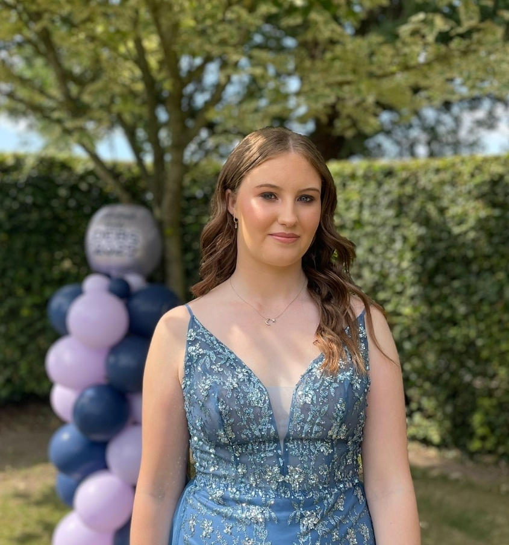

About Me!

Hello!!.
My name is Aoife! I'm a first year student in SETU Waterford.
I am currently in my first year studdying Computer Forencis and Security
I chose to study this course for a number of different reasons. While studding computer science for my leaving certificate, I developed a interest into understanding how computer systems work and how technology is shaping the world around us. At the same time, I was also drawn to Criminology. So when the time came to fill out my CAO application , I found it difficult to choose between the two. I decided to do further research and came across this course and thought it was a perfect opportunity to combine both interests, this course allows me to explore technology while also understanding its role in security.
Besides my interests in Computer Science,I love to stay active by playing camogie and exploring new places whenever I can. If you want to learn more about me feel free to follow the links above to learn more!!